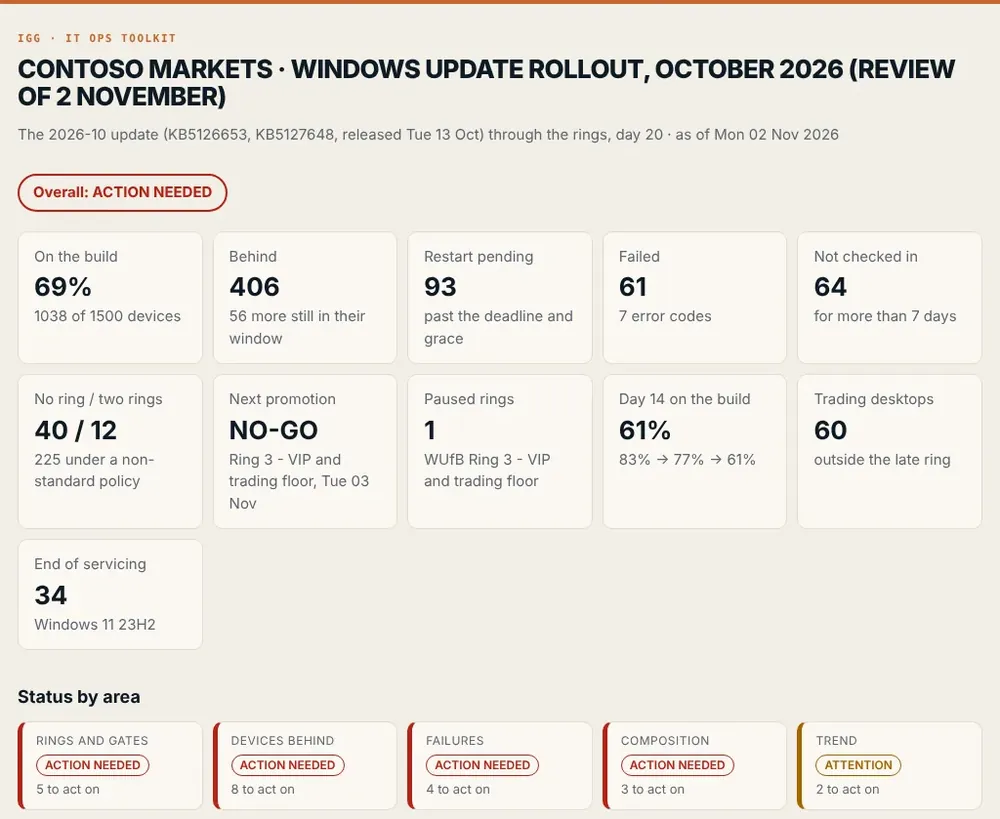

El anillo tardío de la sala de trading se pausó tras una actualización problemática y nadie se acordó de él, así que cinco semanas después lleva dos meses de retraso y la pausa caduca sin que nadie haya decidido qué pasa después. Así lo detecta la revisión del despliegue de Windows Update que acompaña a este post, una herramienta de código abierto que se ejecuta con datos de ejemplo de una empresa inventada con sala de trading y 1.500 equipos con Windows 11 en cuatro ciudades europeas, revisada veinte días después del Patch Tuesday de octubre, con los problemas puestos a propósito.
Los anillos de actualización son grupos de equipos que reciben la actualización mensual con un retraso fijado, y funcionan como temporizadores. El anillo general recibe la actualización diez días después del Patch Tuesday haya ido bien el piloto o no, y en esta demo arranca con el piloto todavía al 77%. Un informe que cuenta instalaciones no dice si el despliegue está bajo control. La herramienta añade una puerta entre anillos, basada en el porcentaje del anillo anterior con la compilación, su tasa de fallos, los días desde que se le ofreció, los incidentes P1 o P2 abiertos por la actualización y los problemas conocidos, y da un go/no-go para la siguiente promoción.
Sesenta puestos de trading en el anillo equivocado y un piloto de informáticos
Sesenta puestos de trading están en el anillo general en lugar del tardío, y se quedan sin audio en los cascos a la apertura del mercado. El piloto, que debería detectar los problemas primero, son nueve informáticos de cada diez. La revisión comprueba si al piloto le faltan los departamentos, modelos y sedes del anillo general, y señala los que no tienen el tamaño previsto y las directivas que se apartan del estándar.
Un modelo de portátil falla la actualización en un tercio de sus equipos
Un modelo de portátil falla con el mismo código de error en un tercio de sus equipos, señal de un arreglo que se hace una vez y no de equipos que se reparan uno a uno. Noventa equipos llevan esperando un reinicio desde antes de la fecha límite, y una oficina entera deja de sincronizar el mismo día por la VPN. La revisión lista además los equipos sin anillo o en dos, en una versión de Windows 11 cerca del fin de servicio o retenidos por una safeguard hold.
En el tiempo, el porcentaje de equipos con la compilación al día dos semanas después del Patch Tuesday ha bajado tres meses seguidos. La herramienta sigue ese porcentaje al día 7, 14 y 21 y la mediana de días hasta instalar por anillo.
Cómo usarlo con datos reales
Un equipo cuenta como actualizado cuando la revisión de su versión del sistema es la del Patch Tuesday del mes o posterior. Su anillo sale de los grupos o colecciones a los que están asignadas sus directivas, y los equipos en cogestión siguen a Configuration Manager mientras la carga de trabajo de Windows Update no haya pasado a Intune. Cada equipo se mide con su propia fecha límite y su gracia, así que uno que aún está en plazo no cuenta como retrasado. El repositorio incluye un exportador de solo lectura en PowerShell para Microsoft Graph, los informes de Windows Update for Business en Log Analytics y Configuration Manager, y genera un informe web con una línea temporal del mes y un informe para la reunión de parches o el CAB con una línea para la decisión. Funciona con Python y solo la librería estándar, e incluye 13 tests y un runbook. La demo usa las compilaciones, los KB y los problemas conocidos reales del estado de versiones de Windows; la empresa y sus equipos son ficticios. Como promocionar un anillo es un cambio, la revisión encaja con el calendario de cambios publicado el mismo día.
De dónde sale
La herramienta nace de dirigir la migración a Windows 11 de una oficina con sala de trading, de gestionar Intune y MECM en cogestión, de años automatizando con PowerShell y Microsoft Graph, y de la gestión de versiones y el CAB como responsable del proceso de cambios, dando soporte a unos 2.500 usuarios en oficinas europeas. La lección que hay detrás: el aplazamiento dice cuándo puede recibir un anillo la actualización, y solo una puerta dice si debe.
¿Quieres llevarlo a tu entorno o adaptarlo a tu caso? Escríbeme y lo vemos.
Tech Career Lab · newsletter
¿Te ha servido? Cada dos semanas envío una idea práctica para perfiles IT: LinkedIn, proyectos, networking y procesos de selección.
Apúntate y llévate las 33 ideas →